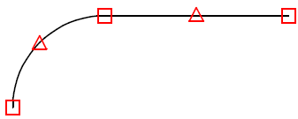

")
Alternativ: Mittlere Maustaste auf Form
Formmatten mit Formdarstellung verlegen.
ISBCAD führt Sie automatisch durch die benötigten Arbeitsschritte/Funktionen, beginnend mit der Auswahl einer Biegeform [WähFor]. Im Funktionsbereich wird jeweils die entsprechende Schaltfläche aktiviert.
» Biegeform auswählen und ausrichten [WähFor]
» Mattentyp- und abstand angeben [Typ/ab]
» Verlegebereich definieren [BerDef]
Wenn eine Verlegung ein weiteres Mal dargestellt und mit einer bereits vorhandenen Verlegung verknüpft werden soll, wählen Sie [VKN ein]. Eine nachträgliche Verknüpfung bzw. Aufhebung ist möglich. Siehe: Verknüpfung bearbeiten
Führen Sie einen der folgenden Schritte aus:
a)Wählen Sie Vkn an, wenn Sie die Verlegung mit einer anderen Verlegung mit derselben Form verknüpfen wollen. Klicken Sie die Verlegung an. [Welche Verlegung].
b)Wählen Sie Vkn aus, wenn Sie die Form nicht verknüpfen wollen. [Welche Form].
§Klicken Sie die gewünschten Biegeform, einen Auszug oder eine Verlegung dieser Biegeform an oder geben Sie eine in der Zeichnung vorhandene Positionsnummer ein und bestätigen Sie mit der Eingabetaste. [Welche Form?].
Die gewählte Biegeform wird an den Mauszeiger gehängt.
§Setzen Sie die Biegeform per Mausklick an einer beliebigen Stelle in der Zeichnung ab. [Form setzen].
2.Teillängen wählen
Nachdem Sie die Form platziert haben, erscheint rechts ein Ansichtsfenster zu Ihrer Orientierung, in dem die Form und die Lage zum Verlegebereich angezeigt werden. So können Sie sehen, ob und wie die Form gedreht werden muss. Oberhalb dieses Fensters wird die Position, der Typ und der Abstand angezeigt.
§Wählen Sie unter Teillänge(n), welche Teillängen dargestellt werden sollen:
|
Darstellung einer Teillänge. §Klicken Sie die gewünschte Teillänge an der abgesetzten Biegeform an. |
|
Darstellung mehrerer Teillängen. §Klicken Sie die gewünschten Teillängen an und bestätigen Sie die Auswahl durch Rechtsklick. |
|
Stellt die ganze Form mit allen Teillängen dar. |
|
Korrektur der Auswahl. |


3.Projektionswinkel angeben
§Geben Sie den Dreh-Winkel ein und bestätigen Sie mit der Eingabetaste. [Dreh-Winkel].
Der Auszug wird entgegen dem Uhrzeigersinn gedreht. (Mit negativem Wert wird im Uhrzeigersinn gedreht.)
Die Ausrichtungsoptionen [P..., O..., PP.., OP..] ermöglichen es, auf schräge Zeichenelemente bezogene Angaben zu machen.
§Geben Sie die Winkel Spiegelachse ein oder nutzen Sie die unter der Abfrage stehenden Konstruktionshilfen. [Winkel Spiegelachse].
Die Spiegelachse wird entgegen dem Uhrzeigersinn gedreht.
- (Voreinstellung): Keine Spiegelung;
0°: Auszugsform wird nach oben gespiegelt; 90°: Auszugsform wird nach links gespiegelt.
§Geben Sie die Winkel Projektionsachse ein oder nutzen Sie die unter der Abfrage stehenden Konstruktionshilfen. [Winkel Projektionsachse].
4.Mattentyp- und abstand angeben [Typ/ab]
§Geben Sie den Mattentyp an. Der Mattentyp muss in der Mattenliste (Matten.dat) enthalten sein. [Mattentyp].
§Geben Sie die fehlende Breite/Länge der Matte ein und bestätigen Sie mit der Eingabetaste. [max. Breite je Matte].
Wenn Randabstände abgeschnitten werden müssen, geben Sie hier die verbleibende Breite ein.
§Geben Sie den Abstand oder die Überdeckung ein. Bestätigen Sie mit der Eingabetaste. [Abstand].
Der Abstand wird mit einem positiven Wert eingegeben, die Überdeckung mit einem negativen Wert.
5.Verlegebereich definieren [BerDef]
§Wählen Sie über die Schaltflächen oben rechts (neben den Funktionsmenüs) die Art der Verlegung:
|
Die vorab eingegebenen Werte (Form, Abbildung, Typ und Abstand) werden nun unter Angabe eines Bezugspunktes an den erforderlichen Stellen auf dem Plan eingelegt. Nach jeder Verlegung werden Sie gefragt, ob die ermittelte Anzahl in der Stahlliste addiert werden soll. |
|
Diese Eingabemethode kann anstelle von "gezielt" gewählt werden, wenn die Teillänge genau an die angeklickte Linie unter Berücksichtigung der Betondeckung passt oder mit denselben Überständen z. B. an einem Durchbruchsrand verlegt werden soll. |
|
Wenn es bei der Verlegung nicht erforderlich ist, den Bezugspunkt exakt anzugeben, und nur die ungefähre Lage genügt, dann kann die Form mit dieser Methode frei verlegt werden. Die Form kann ggf. nachträglich verschoben werden. |
.png)

.png)
.png)
[Bezugsp. an Form]
§Klicken Sie einen Bezugspunkt an der Form an. Dieser Punkt wird im Folgenden in der Geometrie platziert.
 |
Gibt es an der Form keinen Punkt, der direkt an der Betonkante platziert werden kann, können Sie einen Hilfspunkt setzen. Dieser wird später automatisch gelöscht.
[X-neu]; [Y-neu]
Bestimmung der X- und Y-Koordinaten der Form in der Geometrie. Die Form wird im Maßstab der Geometrie gezeichnet.
§Klicken Sie für den X-Wert möglichst senkrechte und für den Y-Wert waagerechte Linien an. Bewegen Sie dabei den Cursor auf die Seite, auf der die Betondeckung berücksichtigt werden soll.
Die Linienkennung und die voreingestellte Betondeckung werden in die Eingabe geschrieben.
§Geben Sie nach der Linienkennung den Wert für die Betondeckung mit dem entsprechenden Vorzeichen ein und bestätigen Sie mit der Eingabetaste.
Mit Rechtsklick können Sie die voreingestellte Betondeckung übernehmen. Wenn kein Abstand angegeben werden soll, geben Sie als Differenz 0 (Null) ein.
[Verlegetiefe]
Hier ist die Eingabe einer Länge möglich, die in die Tiefe der Zeichenebene weist.
§Geben Sie die Verlegetiefe in Metern ein und bestätigen Sie mit der Eingabetaste.
[Breite der Restmatte]
§Bestätigen Sie den Vorschlagswert oder geben Sie einen neuen Wert ein.
[Abstandsaufteilung]
§Geben Sie unter der Abfrage an, ob die Differenz auf alle oder auf den letzten Abstand verteilt werden soll.
1 = gleich |
Differenz wird auf alle Abstände verteilt. |
2 = auf Rest |
Differenz wird auf den letzten Abstand verteilt. |
§Bestätigen Sie die Aufteilung mit Rechtsklick.
[Verlege-Faktor (max. 2!)]
Die Angabe des Verlege-Faktors ist für die jeweils erste Verlegung erforderlich. Wenn diese Verlegung in der Stahlliste berücksichtigt werden soll, geben Sie einen Wert ≥1 ein. Handelt es sich um eine Wiederholung einer, an anderer Stelle gezählten, Verlegung, können Sie auch den Wert 0 (Null) eingeben.
§Geben Sie den Verlege-Faktor ein oder klicken Sie einen Wert in der Drop-Down-Liste an und bestätigen Sie mit Rechtsklick.
Die Verlegung wird in dem Maßstab gezeichnet, in dem die Geometrie vorliegt, auch wenn für die Auszugsform ein anderer Maßstab gewählt wurde.

[Welcher Rand]
§Klicken Sie den Rand auf der Seite an, auf der die Form eingebaut werden soll.
Das Programm legt den Mittelpunkt der Teillänge an den Mittelpunkt der angeklickten Linie.
[Randabstand]
§Geben Sie Sie den gewünschten Abstand ein und bestätigen Sie mit der Eingabetaste.
Mit Rechtsklick können Sie die Betondeckung übernehmen.
[Verlegetiefe]
Hier ist die Eingabe einer Länge möglich, die in die Tiefe der Zeichenebene weist.
§Geben Sie die Verlegetiefe in Metern ein und bestätigen Sie mit der Eingabetaste.
[Breite der Restmatte]
§Bestätigen Sie den Vorschlagswert oder geben Sie einen neuen Wert ein.
[Abstandsaufteilung]
§Geben Sie unter der Abfrage an, ob die Differenz auf alle oder auf den letzten Abstand verteilt werden soll.
1 = gleich |
Differenz wird auf alle Abstände verteilt. |
2 = auf Rest |
Differenz wird auf den letzten Abstand verteilt. |
§Bestätigen Sie die Aufteilung mit Rechtsklick.
[Verlege-Faktor (max. 2!)]
Die Angabe des Verlege-Faktors ist für die jeweils erste Verlegung erforderlich. Wenn diese Verlegung in der Stahlliste berücksichtigt werden soll, geben Sie einen Wert ≥1 ein. Handelt es sich um eine Wiederholung einer, an anderer Stelle gezählten, Verlegung, können Sie auch den Wert 0 (Null) eingeben.
§Geben Sie den Verlege-Faktor ein oder klicken Sie einen Wert in der Drop-Down-Liste an und bestätigen Sie mit Rechtsklick.
Die Verlegung wird in dem Maßstab gezeichnet, in dem die Geometrie vorliegt, auch wenn für die Auszugsform ein anderer Maßstab gewählt wurde.
.png)
[Maßstab]
§Geben Sie einen Maßstab für die Form ein und bestätigen Sie mit der Eingabetaste.
[Lage]
§Verschieben Sie die Form an den gewünschten Platz und drücken Sie die linke Maustaste.
§[Verlegetiefe]
Hier ist die Eingabe einer Länge möglich, die in die Tiefe der Zeichenebene weist.
§Geben Sie die Verlegetiefe in Metern ein und bestätigen Sie mit der Eingabetaste.
[Breite der Restmatte]
§Bestätigen Sie den Vorschlagswert oder geben Sie einen neuen Wert ein.
[Abstandsaufteilung]
§Geben Sie unter der Abfrage an, ob die Differenz auf alle oder auf den letzten Abstand verteilt werden soll.
1 = gleich |
Differenz wird auf alle Abstände verteilt. |
2 = auf Rest |
Differenz wird auf den letzten Abstand verteilt. |
§Bestätigen Sie die Aufteilung mit Rechtsklick.
[Verlege-Faktor (max. 2!)]
Die Angabe des Verlege-Faktors ist für die jeweils erste Verlegung erforderlich. Wenn diese Verlegung in der Stahlliste berücksichtigt werden soll, geben Sie einen Wert ≥1 ein. Handelt es sich um eine Wiederholung einer, an anderer Stelle gezählten, Verlegung, können Sie auch den Wert 0 (Null) eingeben.
§Geben Sie den Verlege-Faktor ein oder klicken Sie einen Wert in der Drop-Down-Liste an und bestätigen Sie mit Rechtsklick.
Die Verlegung wird in dem Maßstab gezeichnet, in dem die Geometrie vorliegt, auch wenn für die Auszugsform ein anderer Maßstab gewählt wurde.